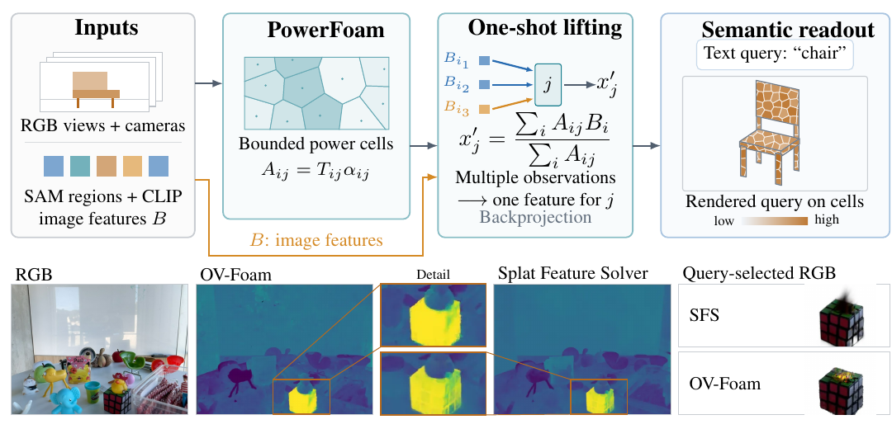

Paper Analysis
01 · Why Accurate 2D Features Can Still Fail in 3D
把每帧 CLIP 特征提升到三维，看起来像一次投影与加权平均，但一个像素通常由多个基元共同渲染，一个基元又会接收多帧、多区域的观测。如果基元跨越物体边界，或透明度让前景像素影响后方基元，就算二维标签准确，三维特征仍可能被混合。
OV-Foam 把问题拆成三层：二维输入是否正确；表示如何把不同类别的证据分配给基元；采用的求解器能否逼近给定表示下的最小二乘解。这三层不能用一个最终 mIoU 混为一谈。
它使用 PowerFoam 替换高斯作为底层表示，再比较多个相同特征提升方法。它不是在 LingBot-Map 内部添加语义 loss，也不是流式记忆网络；贡献主要在表示选择、特征提升分析与控制实验。
Paper Analysis
02 · Following the Original Figure

Yousef Rajeh, Alejandra Esparza Pelcastre, Ivan Viola, and Dominik Engel · CC BY 4.0 · Figure extracted from PDF page 1; surrounding text cropped · Paper & Caption ↗
Figure 1 左侧分为两条输入路径：RGB 与相机用于重建 PowerFoam；SAM 划分区域后，CLIP 编码得到像素对应的语义特征 B。中间从固定重建场取得各基元对各像素的渲染贡献 A，累加加权特征与权重，再为每个单元得到一个可查询向量。
右侧将三维向量与文本编码比较，得到单元类别或渲染查询响应。图下半部展示具体查询的结果差异。应把这里的单元看成承载局部场的表示，不是天然完整物体；一个单元仍可能跨语义边界。
几何重建先优化表示参数，语义提升时固定这些参数。论文的一次求解指特征赋值，不代表整个系统不需要场景重建或预训练教师。
Paper Analysis
03 · Disjoint Cells Still Share Rays
PowerFoam 为每个中心 p_j 和半径 a_j 定义 power distance：||x−p_j||²−a_j²。一个点属于 power distance 最小的单元，再与该基元的包围球相交形成有限支持。不同单元的内部不重叠，但一条射线可以依次穿过多个单元。
单元内还用带方向的 dipole 定义占据侧，允许位移场改变参考平面。占据段内密度恒定，射线穿行长度 ℓ_ij 决定 opacity α_ij=1−exp(−σ_jℓ_ij)。前方累计透射率 T_ij 再决定贡献 A_ij=T_ijα_ij。与 3DGS 共用前向透明度合成形式，差异在几何支持和 opacity 的计算。
不重叠只减少同一区域的重复表示，并不保证每条射线仅有一个非零贡献者，也不保证单元是纯语义区域。低密度的前景单元会让同一个观测继续影响后方单元，论文 Figure 3 正是在说明这个限制。
V_j = {x: ||x-p_j||^2 - a_j^2 <= ||x-p_k||^2 - a_k^2, for every k}
C_j = V_j intersect Sphere(p_j, a_j)
alpha_ij = 1 - exp(-sigma_j * length_ij)
A_ij = T_ij * alpha_ij; sum_j A_ij <= 1Paper Analysis
04 · Weighted Averaging Is Not Generally Least Squares
固定几何后，A 的每行对应一条像素射线，每列对应一个基元；B 是二维特征，X 是未知三维特征。渲染 AX 与观测 B 的误差构成最小二乘目标。精确最小范数解写为 A†B，但论文实际使用 SFS 的一次加权平均 X′=D⁻¹AᵀB，其中 D 的对角元素是该基元的总贡献。
这次平均最小化的是“每个基元分别靠近收到的像素特征”，不是“多个基元的渲染混合共同解释像素”。后一个问题中的未知特征相互耦合，因此简单平均通常只是近似。
若每条射线只有一个完全吸收的贡献者，A 的非零值为 1，平均可以得到最小二乘解。只有单一贡献者却半透明仍不充分：教学例子 A=[0.5]、B=[1]，一次平均给 X′=1，渲染为 0.5；最小二乘却给 X=2，渲染为 1。这是未归一化特征拟合的例子，不能直接推为分类性能差异。
因此应按正文的完整条件理解摘要中的单贡献者直觉：弱 opacity 会使一次平均的分母 ΣA 与正规方程的 ΣA² 不一致。几何支持互斥也不足以自动保证精确求解。
L(X) = 0.5 * ||A X - B||_F^2; X_hat = A^dagger B X_prime = D^(-1) A^T B; D = diag(A^T 1) x_prime_j = sum_i A_ij B_i / sum_i A_ij Exact equivalence in the fully absorbing, single-contributor regime.
Paper Analysis
05 · Fitting Gap and Class Purity Measure Different Errors
fitting gap 比较一次解与最小二乘解的渲染损失。利用最小二乘残差与 A 的列空间正交，可得差值恰为 0.5||A(X′−X̂)||²。该恒等式本身允许不完全吸收；论文进一步给出的共同贡献特征差异上界则要求每行权重和为 1，两者条件不能混用。
gap 小表示接近此问题的最优拟合，却不保证语义正确。如果一个基元收到互相冲突的标签，即使精确求解也可能得到折中的混合向量。论文用 purity 补充测量：按渲染权重统计各类证据份额，取最大类的份额，而非按像素数量投票。
教学例子：一条 A 类射线权重 0.8，四条 B 类射线各 0.05，按数量 B 占多数，按证据质量 A 占 80%。这说明 purity 需要匹配实际聚合权重；但高 purity 只代表 GT 类别来源较一致，不保证 CLIP 识别该类正确。
正文 β 是射线上的特征误差距离相对离散度，依赖完整吸收和均值非零等定义条件。作者将 β、拟合 gap、purity 与分割结果联合报告，比仅说特征更干净更容易判断机制是否成立。
L(X_prime) - L(X_hat) = 0.5 * ||A (X_prime - X_hat)||_F^2 pi_jc = sum_(i:label_i=c) A_ij / sum_(i:labeled) A_ij Purity_j = max_c pi_jc Low fitting gap does not imply correct class labels.
Paper Analysis
06 · Controlled Evidence and Evaluation Conditions
十场景 ScanNet 实验用相同 GT 顶点初始化两种表示，每个顶点一个基元；中心与数量固定，其他重建参数优化，提升阶段再全部冻结。每场景十二个匹配视图用于求解与离散度分析，RGB PSNR 则用所有视图。这控制了部分预算，但不等于相同参数量、内存或实际运行成本。
PowerFoam 平均每射线贡献者为 2.32，对照 3DGS 为 33.63；平均 PSNR 为 27.01 与 25.22。gap 从 4.663×10⁻³ 降到 8.352×10⁻⁴，减少 82.1%。值得注意的是，3DGS 的精确最小二乘参考损失反而更低：结果支持一次近似更准确，不支持 PowerFoam 的可达到最小损失必然更低。
用 GT 类别文本替代二维预测后，PowerFoam mIoU 为 90.59%，3DGS 为 85.40%。按每基元多数 GT 类赋标签的几何 oracle 分别为 98.13% 和 98.92%，说明当前优势不能简单归因于高斯缺少表示容量。该 oracle 是论文采用的诊断协议，并非对所有 mIoU 优化方法的普遍上界。
真实 SAM/CLIP 特征下，ScanNet-19 的 SFS mIoU 从 32.03% 到 34.00%，LUDVIG 从 32.94% 到 34.58%。LERF 四场景的 SFS 从 0.502 到 0.570。提升真实存在，但远低于 GT 标签条件，表明上游语义误差仍然是显著限制。
主表保留所有有效标注点，不像旧协议删除与低 opacity 高斯关联的点；附录还给出过滤版本。OV-Foam 的点归属使用 dipole 表面判断、64 个近邻候选和 fallback，与高斯的归属不同。因此结论应限定在这些完整协议下，不能拿过滤与未过滤分数直接对比。
| Diagnostic | 3DGS | PowerFoam |
|---|---|---|
| Mean contributors per ray | 33.63 | 2.32 |
| One-shot fitting gap per ray | 4.663e-3 | 8.352e-4 |
| GT feature lifting mIoU (%) | 85.40 | 90.59 |
| SFS / ScanNet-19 mIoU (%) | 32.03 | 34.00 |
| SFS / LERF mIoU | 0.502 | 0.570 |
Paper Analysis
07 · Implications for Semantic Memory
这篇最有用的启发是：语义教师再强，也可能被后续存储单元的混合毁掉。对流式 memory，可先分析同一槽位是否接收了不同表面或不同实例的证据，再决定是换教师、调整关联还是改变聚合。只有看最终分割，很难定位问题发生在哪一层。
这与 Slot3R 保留同地址不同状态的思路存在概念联系：空间接近不能自动推出应该融合。但 PowerFoam 是显式空间分区，LingBot-Map 的特殊 token 则是分布式隐状态，两者没有一一对应。不能直接把 purity 公式应用到六个 token，除非先定义可验证的像素到状态贡献。
可借鉴的实验是固定上游语义，用一致的二维标签或教师特征比较不同写入方式，区分教师误差与压缩混合误差；再以真实教师和后续几何结果检验收益。GT 语义可作为诊断上限条件，不作为部署输入。
本文没有展示语义反馈后几何改善，也没有验证长期在线状态更新。论文声明将提供代码及重建资产，但本次未核验到官方 OV-Foam 可运行仓库，未把发布计划当作已经可复现的结果。
Discussion
Reading Questions
Does disjoint support imply one primitive per ray?
不意味着。射线可以依次穿过多个单元，弱吸收还会将前景观测传给后方单元。
Is the one-shot average an exact least-squares solver?
通常不是；单贡献者且完全吸收等条件下才有这里讨论的精确等价。
Why use both GT semantics and CLIP features?
前者隔离表示与提升产生的误差，后者检验同一机制在有上游噪声时是否仍有效。
Does this establish semantic guidance for geometry?
没有。语义提升阶段几何冻结，实验主要检验几何表示如何影响语义，而非相反方向。
References
Paper results refer to version 1. Materials checked on October 29, 2026. Reported experiments were not independently reproduced.
Verified on 2026-10-29. Paper results refer to the linked versions. Repository references were checked on this date.